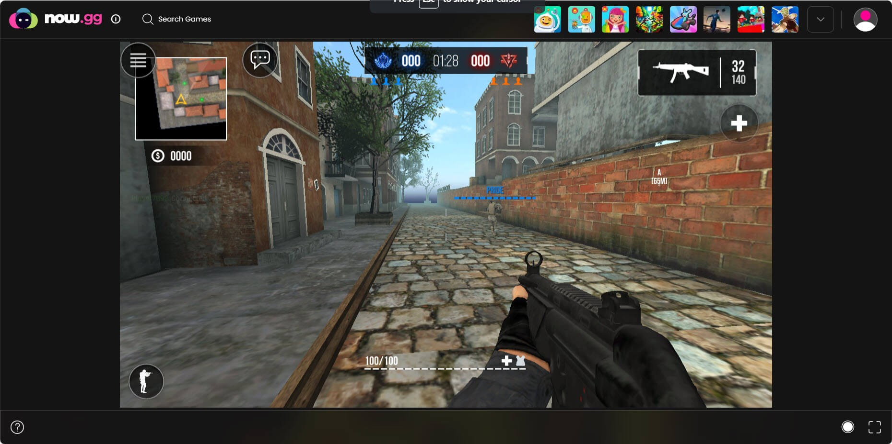
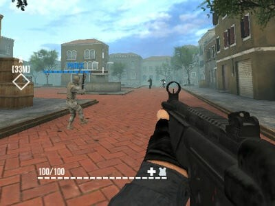
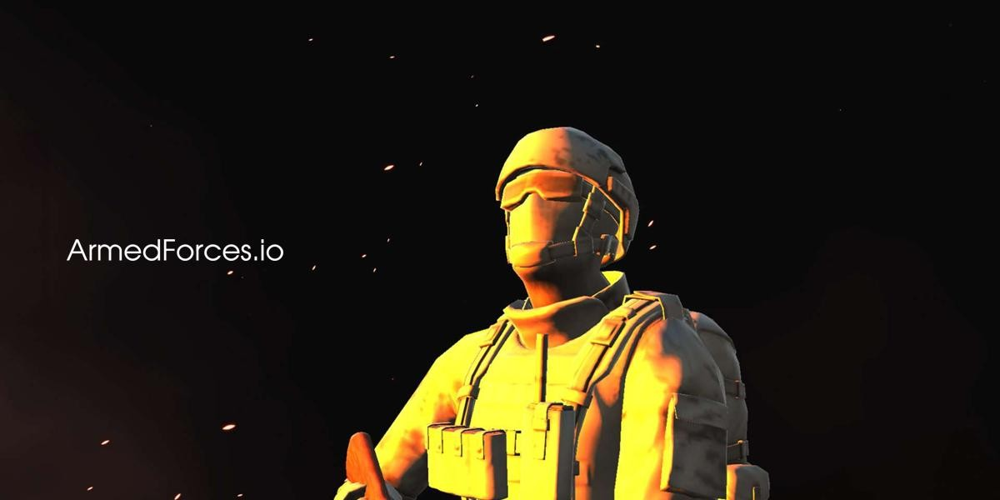

Everyone argues whether you should be flying the chopper, rolling in a tank, or running and gunning on foot in ArmedForces.io. I spent the last 48 hours grinding every single class and vehicle to settle this debate once and for all. Some of these picks are massive traps that will get you farmed by the enemy team, while others are completely broken if you know how to use them. I’m breaking down the raw stats, the hidden matchups, and telling you exactly what to lock in to climb the leaderboard. Let’s get into the definitive ranking.

ArmedForces.io in action
At a Glance
Rank
Name
Key Stats
Verdict
#1
Attack Helicopter — The Sky Menace
Top speed hits 85 units/sec, but has a massive 120-degree blind spot d...
The highest risk, highest reward pick that separates th...
#2
Main Battle Tank — The Iron Wall
Max speed is a sluggish 35 units/sec, but armor absorbs 60% of incomin...
The ultimate team player that wins games, but gets abso...
#3
Heavy Infantry — The Trench Sweeper
Movement speed is 60 units/sec. Equipped with an LMG dealing 15 damage...
The best class for pure gunplay and aggression, but a l...
#4
Recon Infantry — The Ghost
Movement speed peaks at 90 units/sec. Sniper rifle deals 90 damage per...
A highly situational pick that is amazing on large maps...
The Contenders
Attack Helicopter — The Sky Menace
Top speed hits 85 units/sec, but has a massive 120-degree blind spot directly underneath. Base damage is 45 per rocket, with a 2.5-second reload cycle.
✓ The helicopter is the ultimate zone control tool. Because you have verticality, you can rain rockets on enemy tanks that literally cannot aim up at you. In fast-paced arenas, controlling the high ground means you dictate the flow of the match. You can easily farm kills by strafing choke points, and your mobility allows you to escape bad fights in seconds. When your team needs to break a stalemate, a well-timed heli push guarantees a team wipe. It’s the highest skill-ceiling class in the game, rewarding those who master the flight mechanics.
✗ If you get caught by a coordinated anti-air infantry squad, you melt in under three seconds. Your hitbox is huge, and taking even one stray bullet from a heavy infantry player drops your health by twenty percent. Furthermore, flying low to avoid detection puts you right in the crosshairs of enemy snipers. It also completely drains your team's resources if you die constantly, leaving your ground troops without armor support. You are a glass cannon; one mistake and you're instantly back in the spawn screen watching your team lose.
The highest risk, highest reward pick that separates the pros from the casuals.
Main Battle Tank — The Iron Wall
Max speed is a sluggish 35 units/sec, but armor absorbs 60% of incoming small-arms fire. Main cannon deals 120 damage per shell with a 4-second reload.
✓ The tank is the undisputed king of holding objectives. When you park this beast in a choke point, you become a literal moving fortress. Enemy infantry will bounce off your front armor, allowing you to absorb massive amounts of damage while your team pushes up behind you. The 120-damage shell is enough to one-shot any light vehicle and severely cripple enemy helicopters if you catch them hovering. It forces the enemy team to play around you, creating space and dictating the pace of the entire match for your squad.
✗ Your turning radius is absolutely terrible, making you incredibly vulnerable to flanking attacks. If a fast infantry player gets behind you, you’re basically a sitting duck because your rear armor only absorbs ten percent of incoming damage. You also completely block your own team's line of sight, which can frustrate your allies trying to shoot past you. In wide-open arenas, you just get kited to death by helicopters and snipers who stay just out of your effective range. You absolutely require a team to protect your blind spots.
The ultimate team player that wins games, but gets absolutely farmed if you play solo.

How they stack up
Heavy Infantry — The Trench Sweeper
Movement speed is 60 units/sec. Equipped with an LMG dealing 15 damage per bullet at 800 RPM, but accuracy drops by 40% while moving.
✓ This is the bread and butter for aggressive players who want to dominate close-quarters combat. The high fire rate and massive magazine size allow you to shred enemy infantry in tight corridors and buildings. You have the mobility to dodge incoming fire while still outputting enough suppressive damage to keep heads down. In the chaotic, fast-paced arenas of ArmedForces.io, being able to push angles and clear rooms quickly is invaluable. You can easily transition from defending a point to flanking the enemy backline, making you the most versatile ground class available.
✗ You get absolutely deleted in open fields. If you try to cross the map without cover, enemy tanks and helicopters will swat you out of the air instantly. Your damage falls off significantly past thirty meters, meaning you lose hard to any class that can keep their distance. You also lack the utility of vehicles, meaning you can't provide armor or heavy firepower for your team. It’s a very selfish playstyle that relies entirely on your personal aim rather than team synergy or objective control.
The best class for pure gunplay and aggression, but a liability in open maps.
Recon Infantry — The Ghost
Movement speed peaks at 90 units/sec. Sniper rifle deals 90 damage per shot with a 1.5-second cycle, but requires a 1-second aim-down-sights delay.
✓ Speed and information are your best weapons here. You can traverse the map faster than any other class, allowing you to spot enemy vehicle movements and relay callouts to your team. The 90-damage sniper rifle is lethal against enemy helicopter pilots and tank drivers who expose themselves. By playing from the backline, you can safely pick off stragglers and disrupt enemy pushes without taking return fire. Your high mobility means you can reposition instantly if an enemy flanks you, keeping you alive longer than the heavy infantry in chaotic fights.
✗ If an enemy gets within fifteen meters of you, you are completely dead. The aim-down-sights delay means you will lose almost every surprise close-quarters encounter. You also lack the sustained firepower to suppress enemies, meaning if you miss your first shot, you have to hide for a second and a half while the enemy pushes you. It requires immense map knowledge and patience, which many players simply don't have. In fast-paced, small arenas, this class feels completely useless and just ends up feeding the enemy team.
A highly situational pick that is amazing on large maps but terrible on small ones.
The Rankings
#1 Attack HelicopterRank 1 of 4
#2 Main Battle TankRank 2 of 4
#3 Heavy InfantryRank 3 of 4
#4 Recon InfantryRank 4 of 4
Here is my definitive ranking from worst to best. At number four, we have the Recon Infantry. It’s just too map-dependent; if you’re on a small, chaotic arena, you’re just feeding kills. Number three is the Heavy Infantry. Great for aim-duels, but it’s a selfish playstyle that ignores the vehicle meta, making you a liability in coordinated matches. Number two is the Main Battle Tank. I know people love the tank, but it’s overrated for solo players. If you don't have a team to watch your blind spots, you will get farmed by helicopters all game. But the undisputed number one is the Attack Helicopter. It completely breaks the game's balance. The verticality and damage output are just too much for ground troops to handle. If you master the flight mechanics, you will single-handedly win matches. It’s the most rewarding, dominant class in ArmedForces.io, and frankly, the devs need to nerf it.
Who Should Pick What
If you're a solo queue player
Go Attack Helicopter
You can't rely on teammates to watch your blind spots in a tank. The helicopter lets you control your own survival and dictate the fight from above without needing ground support.
If you love pure gunplay and aggression
Pick Heavy Infantry
If you just want to run in, shoot, and get kills without worrying about vehicle cooldowns or team positioning, the LMG gives you the highest close-quarters damage output in the game.
If you play with a coordinated squad
Lock in Main Battle Tank
Tanks are useless alone but unstoppable with a team. Have your friends play infantry to cover your rear armor while you push the objective and absorb all the incoming damage.
If you're a beginner learning the maps
Start with Heavy Infantry
It teaches you the core shooting mechanics and map layouts without the steep learning curve of flying a helicopter or managing a tank's terrible turning radius and blind spots.

The final verdict in action
The Bottom Line
At the end of the day, the Attack Helicopter is the undisputed king of ArmedForces.io. The ability to control the vertical axis and rain down 45-damage rockets while remaining untouchable by most ground units is simply too strong to ignore. Yes, it has a high skill ceiling, but the payoff is absolutely worth the practice. Stop wasting your time getting farmed in a tank as a solo player, and stop trying to win gunfights with the sniper. Get in the chopper, master the strafing mechanics, and watch your kill-death ratio skyrocket. That’s my final answer.
Our Verdict
Armedforces.io manages to cram a surprisingly robust tactical FPS experience into a browser, offering both first and third-person perspectives that cater to different playstyles. While it lacks the ultra-polished competitive scene of Krunker, its diverse weapon arsenal and map layouts provide a satisfying, chaotic sandbox for quick military shooter fixes.
★★★★☆4/5
Similar Games You Might Enjoy
Krunker.io — The undisputed king of browser FPS games, offering similar fast-paced action but with a blocky aesthetic and a massive competitive scene.
Venge.io — A highly polished browser shooter with hero abilities and card-based upgrades, perfect for players who want strategic depth alongside raw gunplay.
Ev.io — Delivers a sleek, movement-heavy arena shooter experience with a futuristic twist, ideal for those who prioritize agility and precision aiming.
1v1.LOL — Focuses on intense, bite-sized 1v1 building and shooting mechanics for players who love the raw mechanical duels of tactical shooters.
How It Compares
Game
Difficulty
Learning Curve
Player Base
Best For
Armedforces.io
★★★☆☆
Moderate
Medium
Tactical FPS fans
Krunker.io
★★★★☆
Steep
Large
Competitive speedrunners
Venge.io
★★★☆☆
Moderate
Large
Ability-based shooter fans
Ev.io
★★★★☆
Moderate
Medium
Movement-focused gamers
Common Mistakes New Players Make
Ignoring the first-person vs. third-person toggle and sticking to one view regardless of the combat range or environment. → Switch to third-person when peeking corners for better spatial awareness, and first-person for precise sniper or long-range engagements.
Sprinting constantly in open areas without utilizing the slide or crouch mechanics to break enemy aim and shrink your hitbox. → Use sprint to cross dangerous zones, but immediately drop into a slide or crouch the moment you enter a firefight to become a harder target.
Failing to utilize the number keys to quickly swap to a shotgun or SMG when enemies push your cover or enter close quarters. → Pre-bind your number keys and practice instantly swapping to a close-range weapon the moment you hear footsteps or get pushed.
Throwing dynamite blindly into the open where enemies can easily dodge it, wasting valuable explosive equipment. → Use the throw mechanic to bounce explosives off walls or through doorways to safely flush out camping enemies in tight corners.